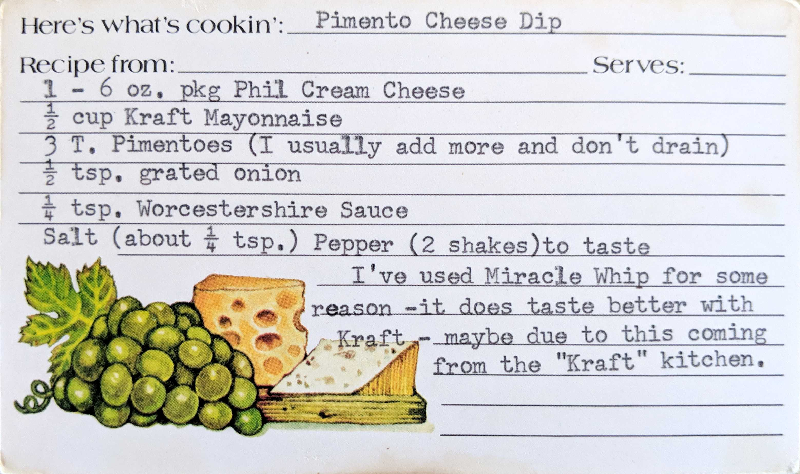

Pimento Cheese Dip
1 - 6 oz. pkg Phil Cream Cheese
1/2 cup Kraft Mayonnaise
3 T. Pimentoes (I usually add more and don't drain)
1/2 tsp. grated onion
1/4 tsp. Worcestershire Sauce
Salt (about 1/4 tsp.)
Pepper (2 shakes) to taste
I've used Miracle Whip for some reason - it does taste better with Kraft - maybe due to this coming from the "Kraft" Kitchen.